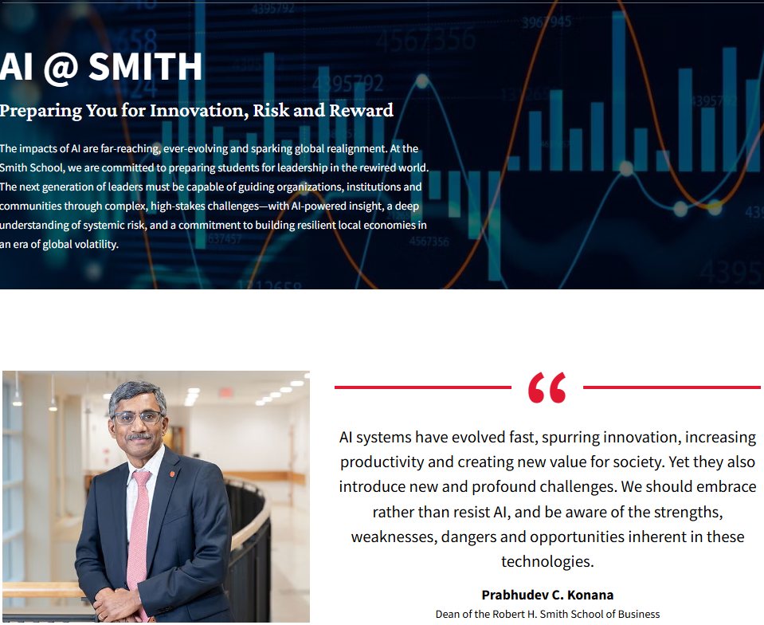
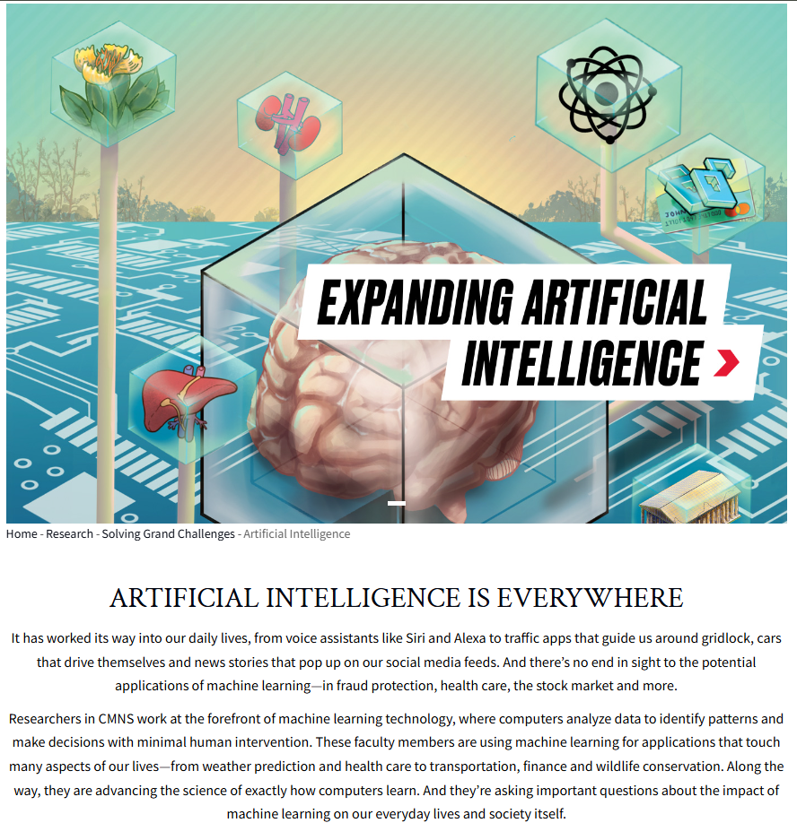
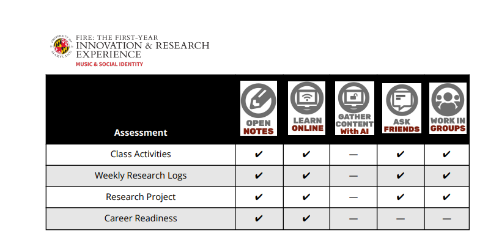
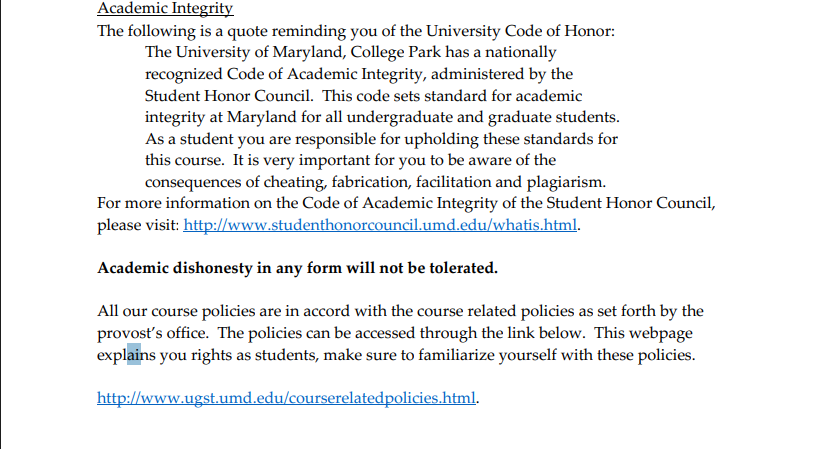
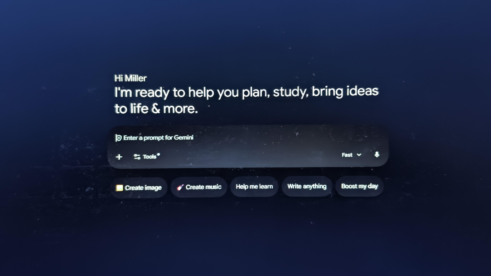
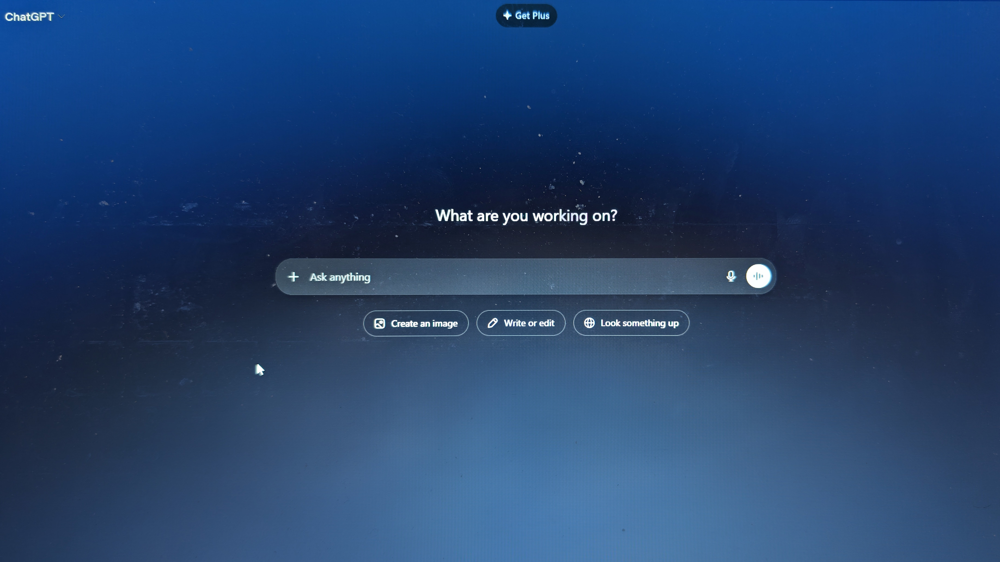

Artificial intelligence has gone from academic taboo to everyday tool in less than two years. At the University of Maryland and campuses nationwide, the debate is no longer whether students are using it; it's whether they're better off because of it.
The New Normal
A couple of years ago, syllabi across the University of Maryland were free from a familiar warning: do not use AI to complete your work. But they were rather full of other warnings about academic integrity. Today, many of those same courses carry a different message: a nuanced, negotiated policy on when, how, and for what purpose AI tools are permitted.
The shift happened fast. ChatGPT launched in November 2022 and reached 100 million users in just two months, making it the fastest-growing consumer application at the time, according to The Guardian. By fall 2023, it was already a fixture in college life. By spring 2025, asking a student whether they'd used AI on an assignment had become roughly as revealing as asking if they'd used Google.
"It's just part of how I work now. I use it to get unstuck, to check my reasoning, sometimes to draft an outline. It's like a tutor that's available at 2 a.m."
Alejandra Villa, junior, information science, University of Maryland
That framing — AI as a tutor, a scaffold, a thinking partner — is how many students describe their relationship with the technology. But educators aren't so sure the analogy holds.
BY MODEL DATA
Who's Winning the AI Race?
Monthly active users of AI mobile apps — combined Google Play & iOS, August 2025
What the Policies Actually Say
UMD's official stance reflects the broader institutional ambivalence. The university does not have a single, campus-wide AI policy. Instead, it has delegated authority to individual instructors, resulting in a patchwork: some courses ban AI outright, some require disclosure, some actively integrate it into assignments.
A review of spring 2025 courses across UMD's College of Journalism, the Robert H. Smith School of Business, and the College of Computer, Mathematical, and Natural Sciences shows a consistent theme: AI use is part of their world and their future.


Such views have found their way into the syllabi of certain courses at the University of Maryland. For the First Innovation & Research Experience, students find themselves given detailed matrices specifying exactly which AI behaviors are permitted per assignment type — distinguishing between taking open notes, learning online, gathering content with AI, asking classmates, or working in groups.
Other courses align strictly with the honor code. An Organic Chemistry course leaves no room for interpretation. Still others, like English 101, carve out a middle path — permitting AI "if used responsibly," but explicitly prohibiting it from composing assignments on a student's behalf.


The Learning Question
The harder question isn't about policy. It's about what happens inside a student's brain when they let a machine take the first swing.
Researchers call it productive struggle — the cognitive friction that occurs when a learner works through a problem without immediately knowing the answer. It's uncomfortable. It's also, according to decades of educational psychology research, a primary driver of long-term retention and genuine skill development.
AI tools, used reflexively, short-circuit that process. Students get an answer. They move on. They never build the mental scaffolding that would have come from working through the difficulty themselves.
But that critique assumes passive use. Students who engage with AI iteratively — questioning its outputs, pushing back, and using it to stress-test their own thinking — describe an experience closer to the opposite.
"I actually understand the material better because I can ask follow-up questions until it clicks. Class time is dedicated to covering the material. AI gives me greater access for help."
Ronnie Rodriguez, sophomore, economics, University of Maryland
Such views have found their way into the syllabi of certain courses at the University of Maryland, opening the door to other forms of learning, including how content is presented and how assignments are approached.
A Benchmark Problem
Not all AI tools are equal, and students often don't know the difference. ChatGPT, Google Gemini, Microsoft Copilot, Anthropic's Claude, and a growing number of specialized academic tools vary significantly in accuracy, reasoning depth, citation reliability, and tendency to fabricate information — a phenomenon researchers call "hallucination."
A 2024 study from Stanford's Human-Centered AI Institute found that students who used AI tools with higher hallucination rates were more likely to submit work containing factual errors and less likely to catch them. The model matters. So does the student's ability to evaluate the model's output.


The Infrastructure Behind the Interface
What are you working on?
When a University of Maryland student opens ChatGPT to outline an essay or asks Claude to explain a macroeconomics concept, the response feels instant, effortless, almost weightless. What powers it is anything but.
Every query sent to a large language model travels to a data center — a warehouse-scale facility packed with specialized processors, cooling systems, and power infrastructure that runs continuously, around the clock. To sustain consistent growth in AI users, the industry has expanded into a larger pool of data centers across the United States and the globe.
The United States and China dominate this landscape. American and Chinese companies operate more than 90 percent of the data centers used by other companies and institutions for AI work, according to Oxford data and other research. Microsoft, Google, Amazon, and Meta have collectively committed more than $300 billion in AI data center investment in 2025 alone.
A single ChatGPT query is estimated to consume roughly 10 times the energy of a standard Google search. The International Energy Agency projected in 2024 that data centers could account for up to 4 percent of global electricity consumption by 2026, driven largely by AI workloads. Students don't see any of this. The interface is clean. The answer comes in seconds. But behind every chatbot response is a supply chain of silicon, electricity, water, and capital that stretches across continents.
Where This Leaves Us
There is no clean verdict here. AI has not ruined the college classroom. It also has not saved it. What it has done is surface a tension that was already present: between education as credential delivery and education as genuine intellectual development.
"The potential benefits of artificial intelligence are huge, so are the dangers" - Dave Waters
The students using AI most thoughtfully tend to be the ones who were already doing the work. The ones using it to avoid the work were, in many cases, already finding ways to avoid it.
What's new is the scale, the speed, and the stakes. AI is not going away. The question every institution, every instructor, and every student now has to answer is not whether to engage with it — but how.